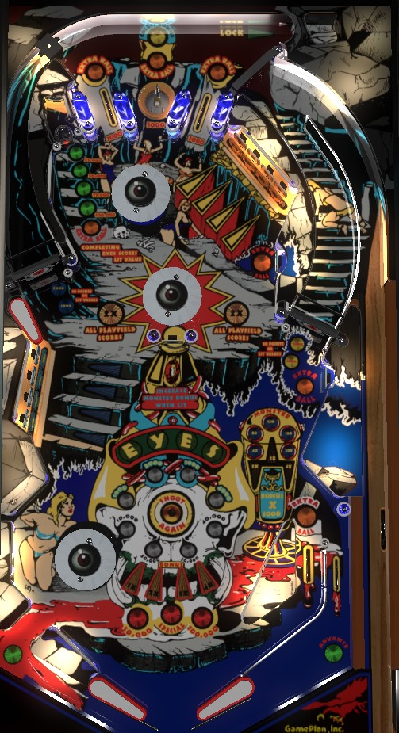

Not to be confused with Cyclone (Bally Williams, 1988), an alphanumeric game about rollercoasters.
Complete the left 4-bank of drop and standup targets a few times to light and advance the left spinner value toward the maximum of 5,000 points per spin, then shoot the left spinner a lot. If feeds coming down from the top of the table cause the upper right drop targets to be completed too, a full left spinner shot can end up in the back saucer for a lock, which instantly starts 2-ball multiball where all scores are doubled. Strategies involving end of ball bonus can be very valuable but usually take too long and are too risky to be worthwhile.
The middle left target bank has 4 drop targets spelling CYCL, and 4 standup targets behind them spelling MONS. The upper right target bank has 4 drops spelling OPES, and 4 standup targets behind them spelling TERS. Together, the drop targets spell Cyclopes and the standup targets spell Monsters. Drop targets score 1,000 points and a bonus advance. If the drop targets have been completed on one side, the standup targets behind them score 2,000 points and a bonus advance when flashing, and hitting a flashing target unlights it.
Completing CYCL or OPES drop targets:
Completing CYCLOPES in its entirety also does the following:
Completing MONS or TERS standup targets:
Completing MONSTERS in its entirety also does the following:
Both spinners start at a value of 100 points per spin. Completing the left CYCL drop targets or MONS standup targets increases the spinner value; first to 2,000, then 3,000, then 5,000 per spin. Game settings determine whether the spinner value carries over from ball to ball or not.
With the left spinner specifically, the upper left flipper is close enough to the spinner that an exploit is available: shooting the ball off the upper left flipper extremely early will pop the ball straight up, registering a couple spins and coming back to the flipper. This is repeatable for as long as you can keep the timing right.
Hitting the captive ball in the top left of the game or draining down either out lane awards a letter in the word EYES, as well as 2,000 points. Completing EYES scores and advances the lit value in front of the captive ball (if no value is lit, 10,000 points are awarded and the 25,000 light is lit). From 25,000 onwards, each completion of EYES is worth 25,000 more than the last, up to a maximum of 250,000 points. Game settings determine whether collecting the 75,000 award or collecting the 100,000 award will also award an extra ball. EYES awards are not worth going for; the captive ball can only be shot with the lower right flipper, and if the ball is on that flipper, you should be either trying to light or shooting at the left spinner anyway.
Spelling CYCLOPES in full lights the back right saucer for a lock. Locking a ball puts a new ball in the shooter lane; as soon as the new ball enters the playfield, 2 ball multiball begins. During multiball, there is a 2x playfield multiplier for as long as both balls are in play, but no other multiball-specific scoring. Use multiball to either complete target banks or shoot at lit spinners that can be worth up to 10,000 points per spin. All scoring earned from multiball is kept track of on a second score display on the backglass, and these points are not awarded until the end of the current ball in play, so absolutely do not tilt on a ball where multiball was played.
Cyclopes has three flavors of end of ball bonus, which I have called standard bonus, monsters bonus, and multiball score.
Standard bonus is advanced by making a lit or flashing CYCLOPES or MONSTERS target, the center standup target, the right in lane, or either of the two top lanes. Base standard bonus maxes out at 149,000 points. Standard bonus multiplier is increased each time CYCL, OPES, MONS, or TERS is completed, with a maximum multiplier of 10x. Completing any of those four half-words when bonus multiplier is already at 10x scores a one-time instant Special. Game settings determine whether base standard bonus is carried over from ball to ball or not. Standard bonus multiplier is carried over from ball to ball; however, if the multiplier is maxed out at 10x at any time, it will be reset to 5x for the next ball. Max standard bonus is 10x 149,000 = 1,490,000 points.
Monsters bonus is advanced 40,000 points at a time by hitting the center standup target when it is completely lit. To completely light the center standup target, you must spell MONSTERS in its entirety. Base monsters bonus can be advanced in this way 15 times, for a maximum base monsters bonus of 600,000 points. Completing either the MONS or TERS standup targets increases the monsters bonus multiplier up to a maximum of 7x. Base monsters bonus is always carried from ball to ball. Monsters bonus multiplier is also carried over, unless it has been maxed out at 7x, in which case it is reset back to 5x for the next turn.
Multiball bonus consists simply of all points earned during multiball(s) on the current turn, as displayed via a flashing number in one of the score displays other than your own.
All of this combined means that end of ball bonus after a good ball or good game on Cyclopes can be over 1,000,000 points, and tilting at any time is discouraged. Game settings determine whether the game will tilt you right away or give you 2 tilt warnings before ending your ball.
The right side of the table bottom is conventional, with an in lane that scores 3,000 points and a bonus advance and can also be lit for extra ball, and an out lane that scores 2,000 points and an EYES advance. On the left, there is no in lane; just a pop bumper blocking off a hard to reach out lane, which also scores 2,000 points and an EYES advance. Hold the left flipper up whenever the ball is near the lower left bumper to help defend against the bumper rocketing the ball down the center drain, and when shooting for the CYCL/MONS targets with the lower right flipper, be sure not to flip away too late and blast the ball directly at the pop bumper.
Special can be set to score a free game, an extra ball, 50,000 points, or nothing. Extra ball can be turned on or off, but cannot be set to a point value.